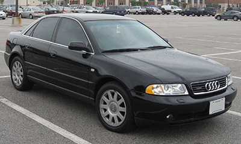

Belarusian Auto Dealer
Меню
Audi A4 B5

Технические характеристики Audi A4 B5:
- Модельный год: 1994
- Тип кузова: Седан
- Длина, мм: 4479
- Ширина, мм: 1733
- Высота, мм: 1420
- Количество дверей: 4
- Количество мест: 5
- Объем багажника, л: 440
- Страна сборки: Германия
Описание товара:
Audi A4 B5, построенный на общей платформе с VW Passat V-го поколения, является идеологическим преемником Audi 80, от которого практически не отличается по габаритам и объему внутреннего пространства. Разработка модели стартовала еще в 1988 году, а к 1991 году был подготовлен внешний дизайн. В серию автомобиль удалось запустить лишь в третьем квартале 1994 года. Основными различиями между Passat и A4 было не только внешнее оформление и дизайн интерьера, а и то, что "Пассат" предлагал гораздо больше места внутри. Новое шасси, на котором построен Audi A4 B5, использовало в своей конструкции рычажную систему подвески из алюминия. Такая схема обеспечивала автомобилю невероятную плавность езды, но недостаток запаса прочности алюминиевых рычагов отражался на их надежности - подвеска требовала ремонта уже после 30 тыс. пробега. Позже эти конструкторские недочеты были доработаны.
Основными преимуществами Audi A4 B5 является прекрасная обзорность и высочайшая степень пассивной безопасности. На европейских рынках для седана был доступен широкий ассортимент двигателей. Audi A4 B5 отличается тем, что это первый автомобиль Volkswagen Group с новым 20-клапанным мотором 1.8 л, реализованным на основе блока Audi Sport. Кроме того, инженеры Audi внедрили в свою модель модернизированную автоматическую трансмиссию TipTronic на основе технологий, используемых Porsche. Эта коробка передач с гидротрансформатором позволяла переключать скорости вручную или работала как классический "автомат". В 1997 году Audi A4 B5 получил "подтяжку лица" с традиционными для этой процедуры косметическими обновлениями, а в 2006-м году появился преемник с новым кузовом.
© Все права защищены